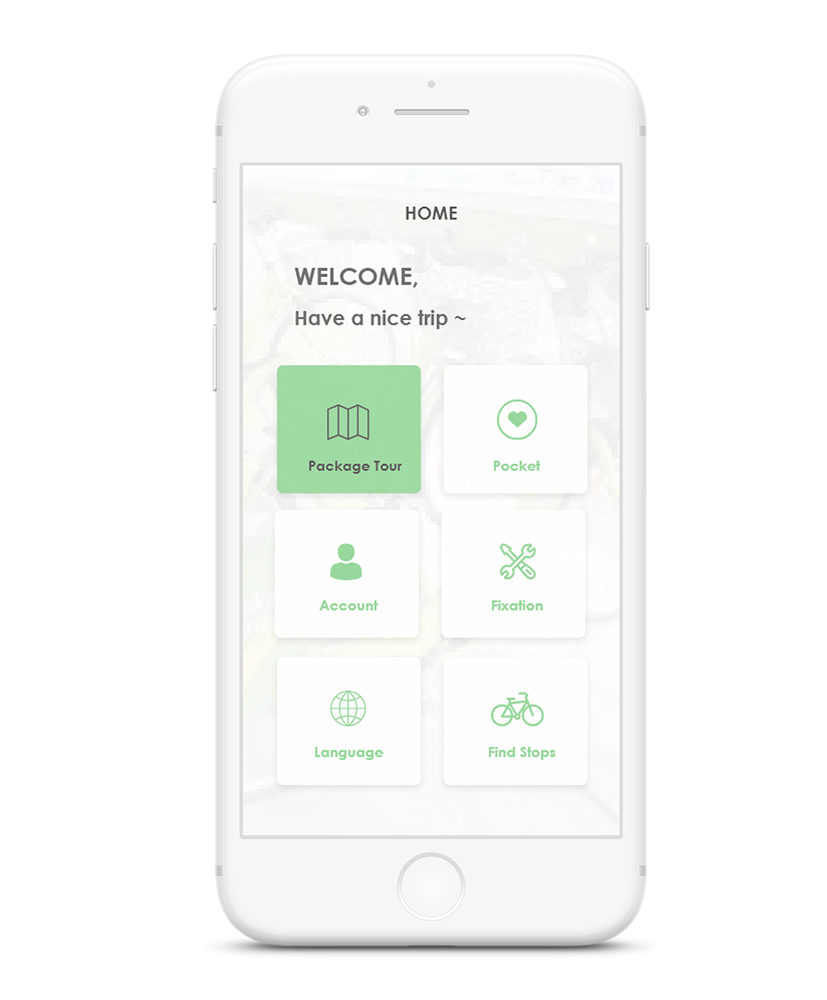
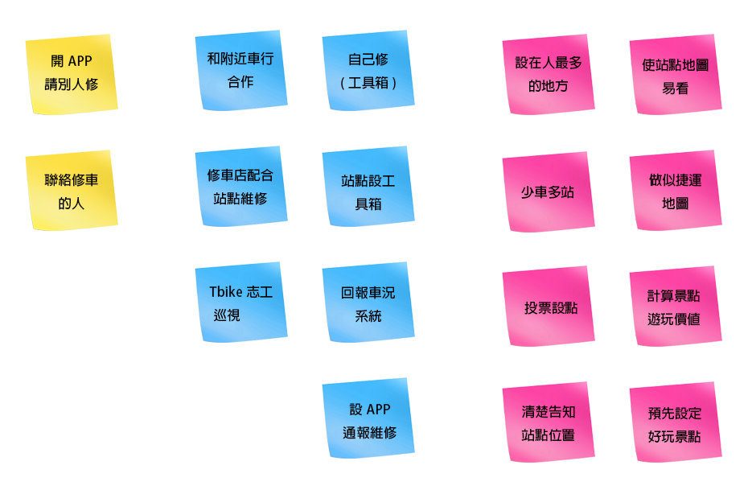

透過APP預先的規劃，擁有一個美好的旅程。
Tbike是臺南市的公共自行車租賃系統，2015年開始實施，目前已設有53個站點，共1520輛車在線上服務。然而，我們觀察Tbike公共自行車租賃系統仍於改善的階段，於是我們挑選此主題，在「設計思考」課堂中，發掘問題並予以解決。
UX研究員
UX設計師
2018 3-6
在進行腦力激盪的過程中，我們先列出how might we(HMW)的問題，依據此在給予的「八分鐘」時間內做點子發想。最後將所有的點子做分類，製成親合圖(affinity diagram)。
前期的腦力激盪由於HMW問題定義不佳，導致想法無法聚焦。透過重新檢視需求並再次進入田野與使用者訪談方式，填補過去忽略的問題。
起初，我們想在自行車上裝設小裝置，讓每台車都變成一個智慧型的物件與外部的環境互動連結。然而，經過其他替代方案的比較與考量後，我們選定可行性與整合性較高的APP放置於單車上，以替代小裝置。決定媒介後，便開始發想細部內容與進行規劃。為了避免想法已有人使用，同時吸取目前線上產品服務的經驗，我們進行了案例分析。
//
[ 測試過程，我們著重於基本功能使用上的順暢程度，介面配置是否直覺。同時聆聽使用者對APP的建議，最後才會討論視覺喜好的問題。]